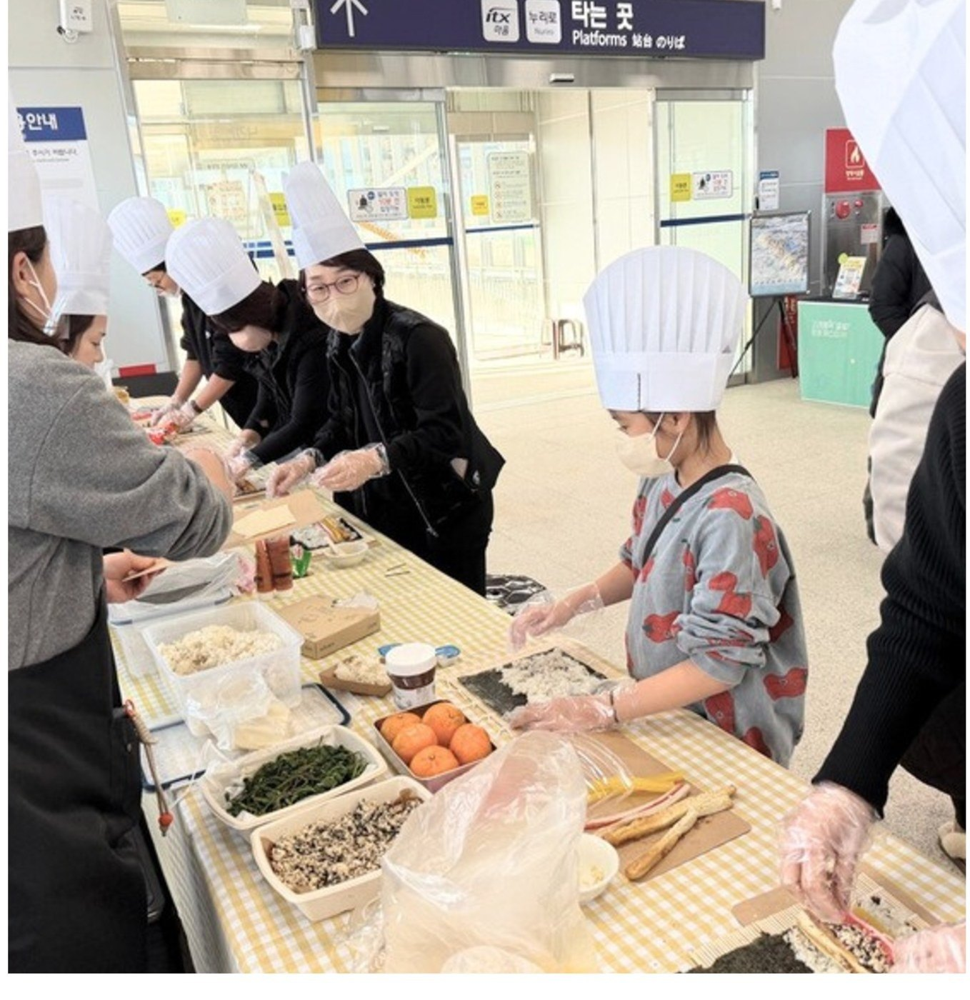
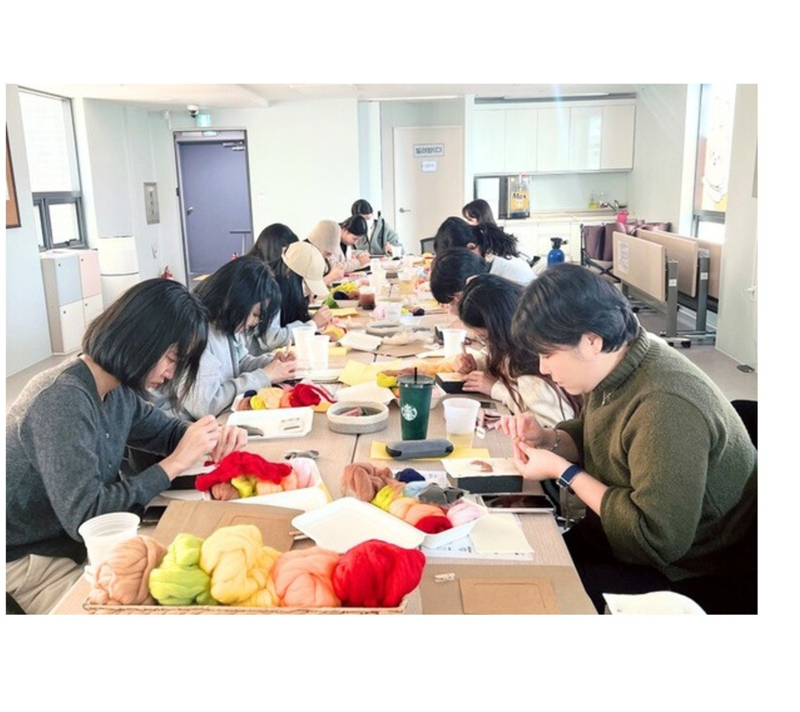
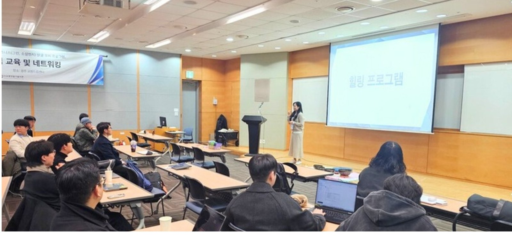
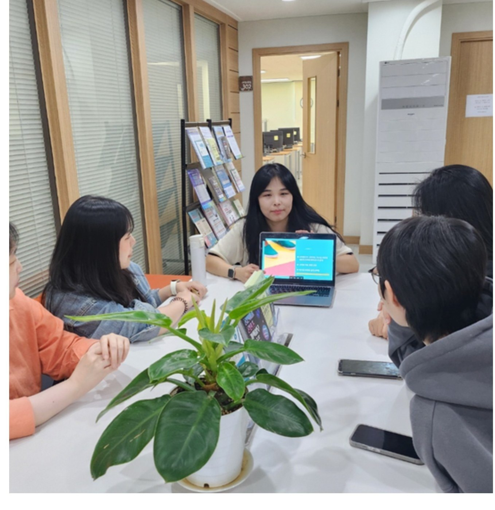
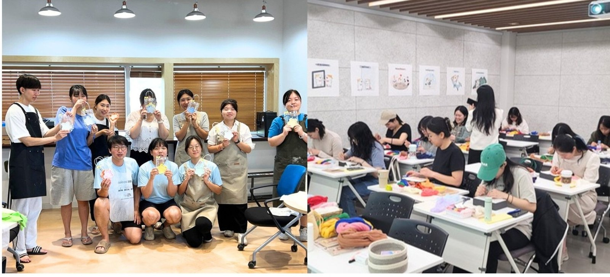
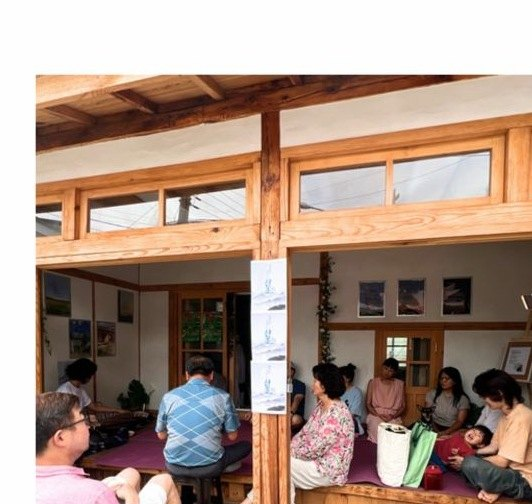
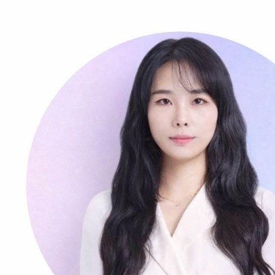

CULTURE
지역을 경험하는 문화 프로젝트
지역의 장소와 이야기를 참여형 콘텐츠로 연결합니다.
LOCAL JOY는 기업과 공공기관, 지역의 목적에 맞춰 웰니스 프로그램과 문화 프로젝트를 기획하고 실행하는 웰니스 문화기획사입니다.

우리는 웰니스를 막연한 ‘힐링’으로 이야기하지 않습니다. 누구에게, 왜 필요한지부터 정의하고 프로그램, 콘텐츠, 공간과 현장을 연결해 실제로 체감할 수 있는 경험으로 만듭니다.
정해진 패키지를 반복하는 대신 사업 목적, 대상, 공간, 일정과 예산을 파악한 뒤 프로젝트에 필요한 방식으로 설계합니다.
직장인의 스트레스 관리, 리프레시와 조직문화 목적에 맞춘 참여형 프로그램과 워크숍을 기획합니다.
청년, 지역주민, 중장년 등 사업 대상과 지역의 환경을 고려한 공공 웰니스 프로그램을 설계합니다.
축제, 팝업, 지역문화사업에 웰니스와 참여 콘텐츠를 결합해 기억에 남는 현장을 만듭니다.
워크북, 향기, 웰니스 키트와 굿즈 등 프로그램의 경험이 일상까지 이어지는 콘텐츠를 개발합니다.
LOCAL JOY는 프로그램의 한 장면보다 참여자가 처음 만나고, 경험하고, 기억하는 전체 흐름을 설계합니다.

명상과 싱잉볼, 감각 활동을 통해 참여자가 자신의 상태를 돌아보고 일상의 긴장을 내려놓도록 구성한 참여형 웰니스 프로그램입니다.

지역의 장소와 이야기를 참여형 콘텐츠로 연결합니다.

참여와 대화를 통해 자연스럽게 관계가 만들어지는 경험을 기획합니다.

컬러와 창작 활동을 활용해 감정을 발견하고 표현합니다.
사업 목표, 참여자, 공간, 일정, 예산과 운영 조건을 파악합니다.
콘셉트와 참여 흐름, 프로그램 구성과 운영 방식을 구체화합니다.
워크북, 체험물, 키트와 굿즈 등 필요한 접점을 제작합니다.
참여자가 자연스럽게 몰입하도록 프로그램과 현장을 운영합니다.

해소공간은 LOCAL JOY가 영덕에서 운영하는 로컬 웰니스 베이스입니다. 명상, 향기, 창작과 문화 프로그램을 직접 실행하며 지역에서 필요한 웰니스 경험을 실험하고 발전시킵니다.
SPACE & PROGRAM INQUIRY →
웰니스 프로그램과 문화 프로젝트를 기획하며 공공기관, 문화기관, 지역 커뮤니티와 함께 대상과 목적에 맞는 경험을 설계하고 현장까지 운영합니다.
기업 프로그램, 공공사업, 문화행사, 웰니스 콘텐츠 기획까지 프로젝트의 목적과 대상, 일정에 대해 알려주세요.
localjoy@naver.com
010-9771-3731
경북 영덕군 영해면 예주시장2길 3 2층
기업 웰니스, 공공기관 프로그램, 문화행사 및 콘텐츠 기획 문의를 남겨주세요.
이메일로 문의하기 전화 문의 010-9771-3731